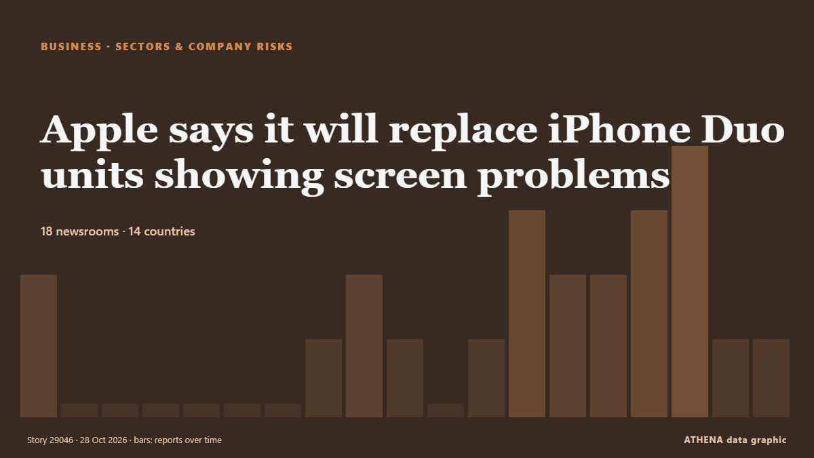

Apple says it will replace iPhone Duo units showing screen problems

Days after launching its first folding iPhone, Apple acknowledged on Monday that some of the devices exhibit display problems and said it will replace them. من CGTN (World)
نشرته بشكل مستقل 18 مصدرًا في 14 دولة منذ 25 أكتوبر، وأول من نشره Express Tribune؛ والتغطية تتراجع. يقدّر ATHENA الخطر بأنه منخفض (1.4/10)، ويعود ذلك أساسًا إلى خطورة الضرر الموصوف ونطاقه الجغرافي والقطاعي. الثقة 84٪ (مرتفعة)، وعدد المصادر المستقلة المؤكِّدة: 18، بمتوسط موثوقية للمصادر يبلغ 75٪. وسائل الإعلام حسب البلد: الإمارات العربية المتحدة (7), باكستان (2), الهند (2). التغطية: من 25 أكتوبر إلى 27 أكتوبر، 56 ساعة.
لماذا يهم: تُظهر أخبار الشركات والاستثمار إلى أين تتجه رؤوس الأموال وأي القطاعات تكسب أو تخسر.
العنوان الأول: Apple to replace iPhone Duos affected by screen problem
تُعرض العناوين بالإنجليزية كما نُشرت.
نظرة سريعة
اختير وقُيِّم وكُتب وفق منهجية ATHENA المنشورة. لا يتدخل أي محرر في الأحداث بعينها. كيف يُنتَج ›
| 25 Oct 06:19 UTC | 2 |
|---|---|
| 25 Oct 09:19 UTC | 0 |
| 25 Oct 12:19 UTC | 0 |
| 25 Oct 15:19 UTC | 0 |
| 25 Oct 18:19 UTC | 0 |
| 25 Oct 21:19 UTC | 0 |
| 26 Oct 00:19 UTC | 0 |
| 26 Oct 03:19 UTC | 1 |
| 26 Oct 06:19 UTC | 2 |
| 26 Oct 09:19 UTC | 1 |
| 26 Oct 12:19 UTC | 0 |
| 26 Oct 15:19 UTC | 1 |
| 26 Oct 18:19 UTC | 3 |
| 26 Oct 21:19 UTC | 2 |
| 27 Oct 00:19 UTC | 2 |
| 27 Oct 03:19 UTC | 3 |
| 27 Oct 06:19 UTC | 4 |
| 27 Oct 09:19 UTC | 1 |
| 27 Oct 12:19 UTC | 1 |
لماذا هذه الأرقام
الأهمية
الخطر
الثقة
التغطية — من نشر الخبر ومتى
العنوان كما نُشر · يفتح الأصل- Express Tribune · باكستانApple's iPhone Duo faces early durability concerns as users report cracked screens
- Gulf News · الإمارات العربية المتحدةiPhone Duo screens crack along hinge within hours of launch
- Gulf News · الإمارات العربية المتحدةiPhone Duo 2 prototypes test Face ID as Crackgate and other complaints pile up
- Gulf News · الإمارات العربية المتحدةApple finally folds: The Dh8,499 iPhone Duo — the good, the bad and Crackgate
- Gulf News · الإمارات العربية المتحدةAre iPhone Duo screens really cracking? Fake photos cloud ‘Crackgate’ as real cases emerge
- Indian Express · الهندApple iPhone Duo buyers report cracked screens, hinge issues: What are the possible causes?
- The Next Web · هولنداApple’s foldable iPhone Duo hit by early reports of cracking screens
- TechCrunch · الولايات المتحدةUh-oh, it sounds like the iPhone Duo keeps cracking and users aren’t happy about it
- Gulf News · الإمارات العربية المتحدةiPhone Duo crackgate: Apple breaks silence on screen cracks, offers replacements
- CNA (Channel NewsAsia) · سنغافورةApple says it will replace iPhone Duo units showing screen problems
- The Next Web · هولنداApple will replace iPhone Duos with failing inner screens
- MyJoyOnline · غاناApple says it will replace iPhone Duo handsets with screen problems
- BBC Business · المملكة المتحدةApple to replace iPhone Duos affected by screen problem
- DigiTimes Asia · تايوانAs iPhone Duo inner screens crack, Samsung capitalizes on foldable surge
- The National · الإمارات العربية المتحدةApple to replace iPhone Duos with damaged screens but does not explain fault
- NDTV · الهند'Large Crack On Screen, Crunching Sound': Customers' iPhone Duo Feedback
- CGTN (World) · الصينApple says it will replace iPhone Duo units showing screen problems
- Business Recorder · باكستانApple says it will replace iPhone Duo units showing screen problems
- Capital FM · كينياApple says it will replace iPhone Duo handsets with screen problems
- Free Malaysia Today · ماليزياApple’s foldable iPhone Duo draws early complaints of screen cracking
- Gulf News · الإمارات العربية المتحدةiPhone Duo screen cracks: Why do foldable displays fail at the fold?
- Anadolu Agency (English) · تركياApple to replace iPhone Duo devices over reported screen problems
- Fortune · الولايات المتحدةSome iPhone Duo owners say Apple’s $1,999 foldable cracked within hours of unboxing—and a possible explanation has emerged